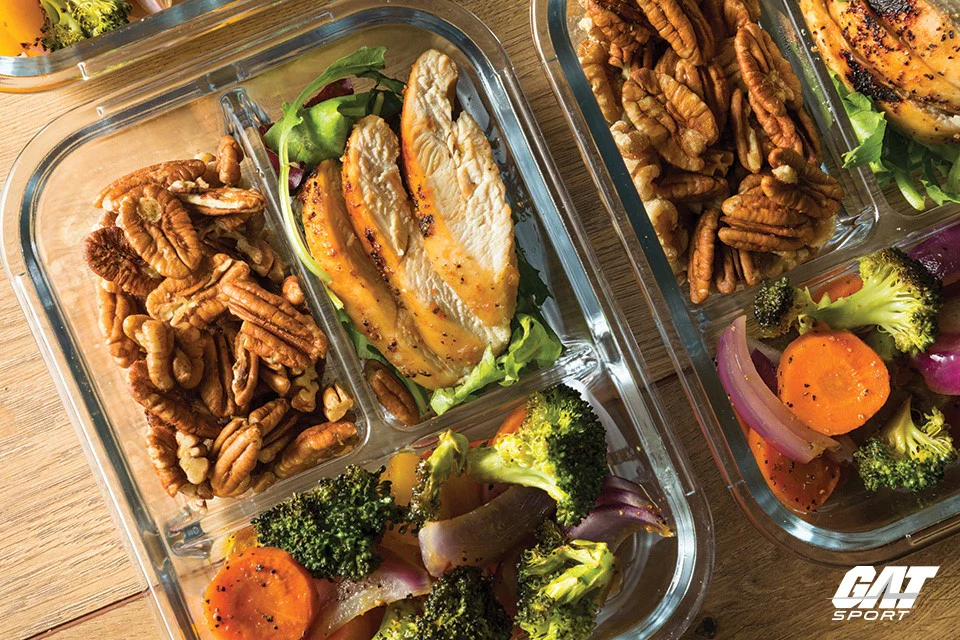
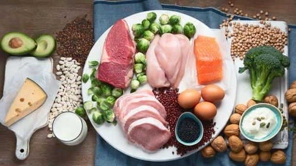

Foods to eat include
It takes about the same time to cook one meal as it does to cook two or more. Cooking four or five meals at the beginning of the week allows you to save time. It also saves you money because you're not tempted to go out and spend money on lunch every day.

Foods to eat include
Many bodybuilders unnecessarily start to eat protein every 2-3 hours on a daily basis, believing that it will help them get bigger muscles in a fast manner. However, this claim has not been proved quite true for many people in practice. On the other hand, it's possible to grow muscles even after not eating too often.
Foods to eat include
One of the most important rules to follow when on a vegetarian diet for bodybuilding is getting enough calories. If you do not get enough calories, your body may turn the limited amount of protein into fuel and use it up during workouts. This way, you might not build muscle mass but notice a deficit.